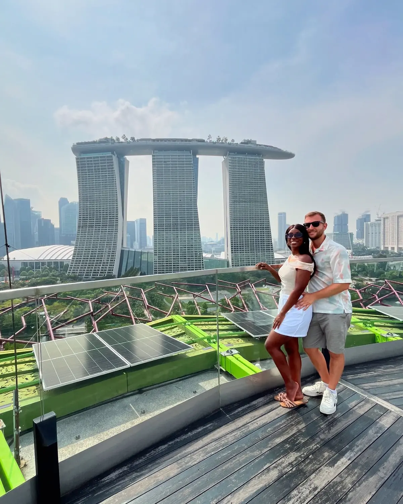

The highlight01
Marina Bay Sands & the SkyPark
📍 Marina Bay Sands · SkyPark Observation Deck
The three-towered Marina Bay Sands is the icon of Singapore, and getting up high is the move. The SkyPark Observation Deck on the 57th floor gives you the whole bay, the CBD skyline and Gardens by the Bay laid out below — the best panorama in the city. If you're not staying at the hotel, book the observation deck ticket ahead so you can time it for late afternoon into golden hour.
Best panorama in the cityGo for golden hour